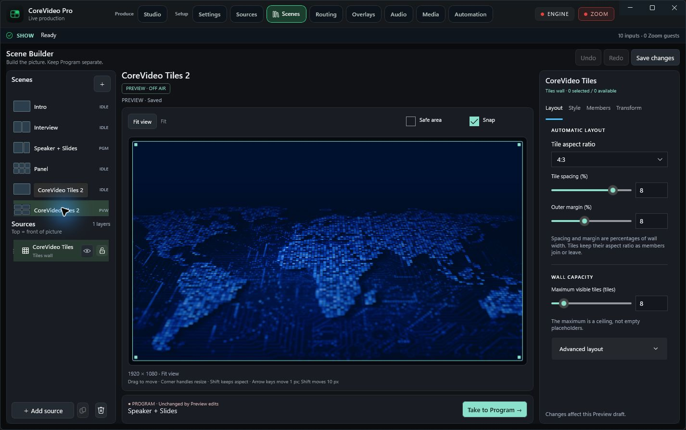
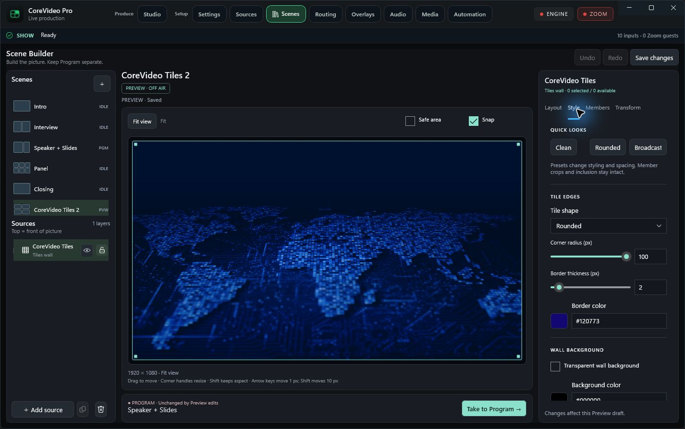
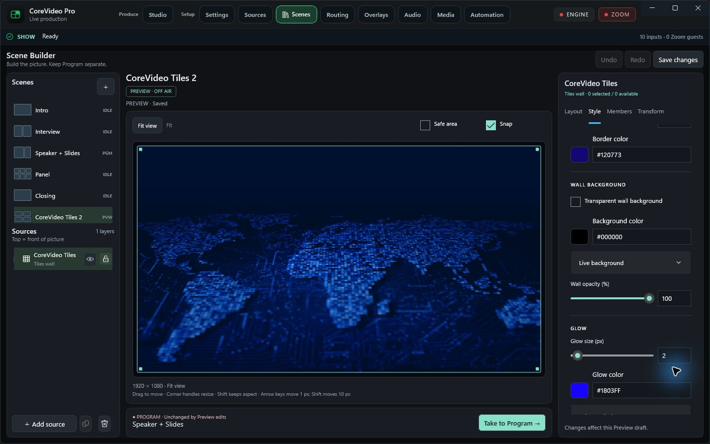
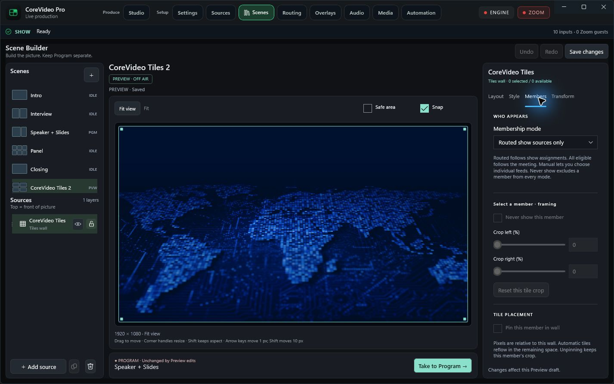
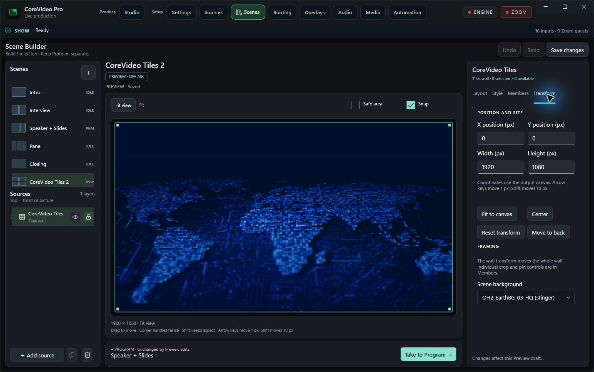
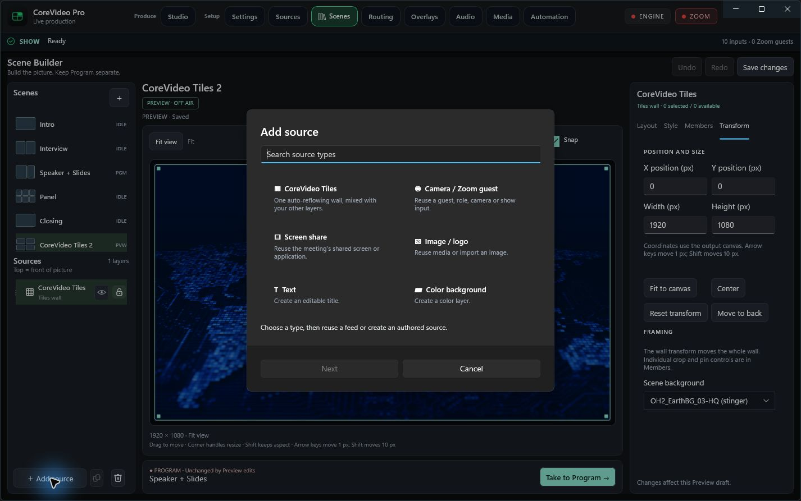

Scene Builder, in the app.
Review build · 41d70f4 · October 13, 2026Fresh screenshots of the running Windows app, with the new workspace and CoreVideo Tiles controls. Tap any image to open its full-resolution original and zoom in.
This is a screenshot gallery, not a live remote-control session. The review build is open on the desktop; installation remains pending administrator consent. No Zoom meeting is joined, so member controls are disabled until a guest is available.
Tiles layout
Scene and layer docks, large Preview stage, aspect ratio, spacing, margins and wall capacity. Program remains separate from Preview edits.
Open full resolution ↗
Tiles style
Quick looks, tile shape, corner radius, border thickness and synchronized color swatches with exact hex entry.
Open full resolution ↗
Background, opacity & glow
The lower portion of Style: transparency, background color, live background, wall opacity and glow controls.
Open full resolution ↗
Member framing & placement
Membership policy, Never show, live left/right crop, crop reset and pin controls. This capture has no connected guests; member-specific controls are disabled.
Open full resolution ↗
Exact transforms
Paired position and size fields in canvas pixels, with Fit, Center, Reset transform and Move to back actions.
Open full resolution ↗
Add source catalog
One searchable entry point for Tiles, camera/Zoom, meeting screen share, images, editable text and color backgrounds.
Open full resolution ↗